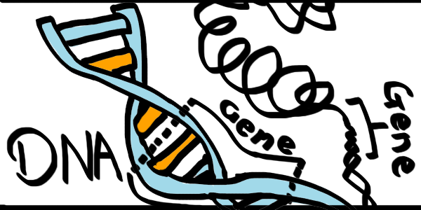
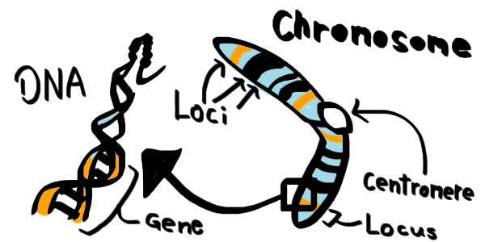
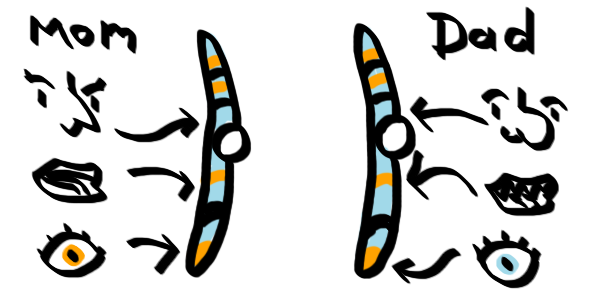
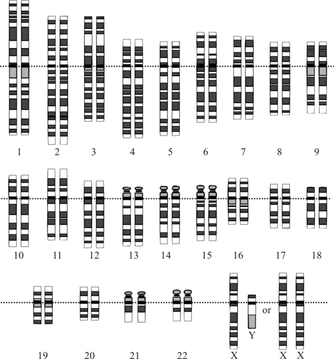
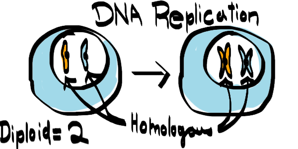
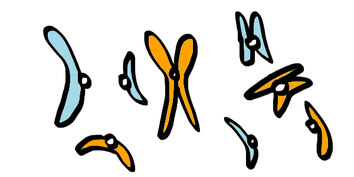

DNA and Preparation
We are all made differently, and you already know that is because of some mysterious process called meiosis. The specific process of meiosis requires starting with one cell who will split up into four cells while moving DNA around in a special way. Before we can get too deep into that, we must talk a little bit about DNA, the building blocks of what makes you you!
 Our DNA is made up of sections called genes. Genes are responsible for our traits, for example one section of DNA might be responsible for eye color.Chromosomes and their Anatomy
When DNA coils up to get compact, it is usually in the form of chromatin. If you remember, that was when the DNA is bunched all over randomly. When it is time to perform meiosis; however, a cell forms the DNA into a chromosome, a more complicated combination.
 Anatomy of a ChromosomeAs you can see in the figure above, chromosomes are made up of compact DNA. DNA is made up of sections called genes. The place where a gene is located on the chromosome is a locus (plural: loci). In a central part of the chromosome, there is a ball of protein called a centromere. It is important to note that all chromosomes have exactly one centromere.
In one human cell, there are 46 chromosomes in the nucleus: 23 from your mom, 23 from your dad. When a cell has all 46 chromosomes, it has a "full set". Another name for a full set is diploid, so you can say that humans have a diploid number of 46.
 Homologous pairs don't have to have the same exact genes, just the same type of genes.This also means that the chromosomes come in homologous pairs, pairs of chromosomes that have the same types of genes in the same locations (again, one from each parent). Here is a picture of a karyotype that shows all 23 pairs.
 A karyotype is a list of all the chromosomes in a cell. This is one of a human's cell. (Source: https://commons.wikimedia.org/wiki/File:Karyotype.png)WERE YOU PAYING ATTENTION
When there is a full (diploid) set of chromosomes in a human somatic cell, how many homologous pairs do you expect to see?
Interphase
When a cell is going through its normal functions (breathing, growing, etc.) you can also say it is in interphase. During the first parts of interphase, the nucleus still contains chromatin (DNA bunched up everywhere). But when a gametocyte is ready to go through meiosis, it will turn all the chromatin into the 46 chromosomes. The most important part of interphase is when the DNA of the chromosomes duplicates:
 A cell who's full set is equal to two. Remember this is an example cell; humans have 46.Notice that when a chromosome's DNA is duplicated, there adds another piece to the chromosome. Both the pieces, called chromatids, are formed around one centromere. Woah! That was a lot of crazy vocabulary! Make sure you scroll back up to remind yourself of anything, the endings are important!
Now we are ready for meiosis, because your cell with two chromosomes (and four chromatids) has its full set duplicated.
WERE YOU PAYING ATTENTION
When a human's diploid cell has all its chromosomes' DNA duplicated, how many chromatids are there?
WERE YOU PAYING ATTENTION
How many chromosomes are in this picture? (hint: try counting the centromeres)
BRIDGING QUESTION
When a cell duplicates all its DNA, is it still diploid (that is, does it still have its full set number of chromosomes)?